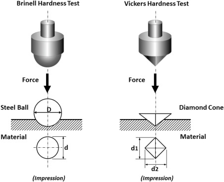

Hardness is defined as a material's resistance to localized plastic deformation, usually measured as its resistance to indentation. In an indentation test, a hard indenter is forced into the specimen under a specific load. The depth or physical size of the resulting indentation becomes the measure of hardness.
Hardness units and scales differ depending on the type of indenter used and the load applied:
1. Brinell Hardness (HB)
Uses a 10mm diameter steel or Tungsten Carbide (WC) ball indenter. Any load 'F' can be applied. The physical diameter of the circular indentation is measured and used in the calculation.
2. Vickers Hardness (HV)
Uses a pyramid-shaped indenter made of diamond with an angle of 136° between faces. The diagonal lengths of the resulting diamond-shaped indentation are measured and averaged for the calculation.

3. Rockwell Hardness
Rockwell relies on multiple distinct scales depending on the material:
- Rockwell A, C & D: These scales use a cone-shaped indenter made of diamond. Used for very hard materials. (HRC uses a 150 kg load).
- Rockwell B, F & G: These scales use a 1/16" diameter (approx. 1.5mm) ball made of steel or Tungsten Carbide. Used for softer metals.
- Rockwell E: Uses a larger 1/8" diameter (approx. 3mm) ball.
Practice Exercises
Test your knowledge on Hardness Testing.
1. How is "Hardness" defined in materials science?
A) Resistance to stretching and necking
B) Resistance to localized plastic deformation (indentation)
C) Total energy absorbed before fracture
2. Which hardness test uses a 10mm steel or Tungsten Carbide ball indenter?
A) Vickers
B) Rockwell C
C) Brinell
3. What shape is the indenter used in the Vickers Hardness test?
A) A small 1/16" steel ball
B) A diamond pyramid
C) A diamond cone
4. Which Rockwell scales utilize a diamond cone indenter?
A) Rockwell A, C, and D
B) Rockwell B, F, and G
C) Rockwell E
5. In the Brinell and Vickers tests, what metric from the specimen is physically measured to calculate hardness?
A) The exact depth of the puncture
B) The diameter or diagonal lengths of the resulting indentation
C) The speed at which the indenter penetrates the surface